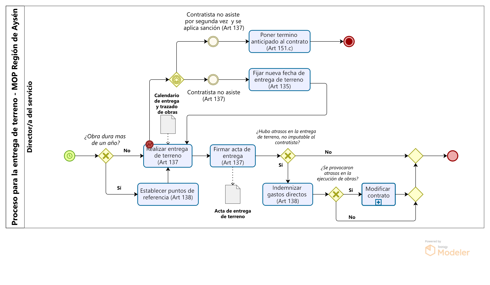
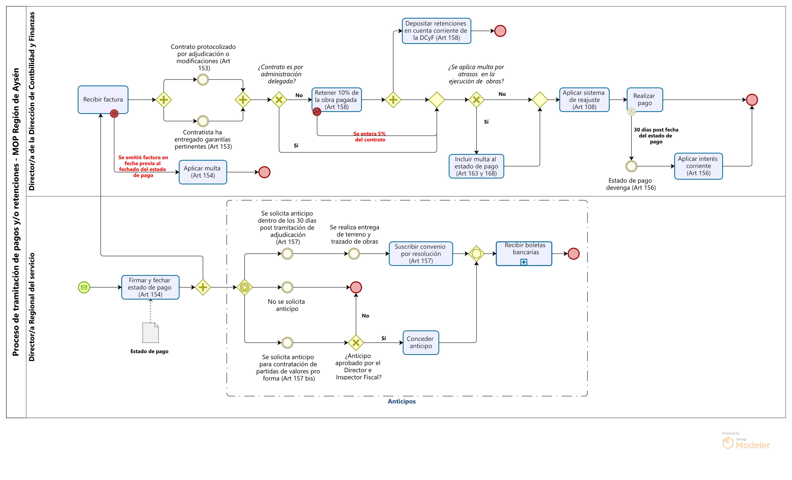
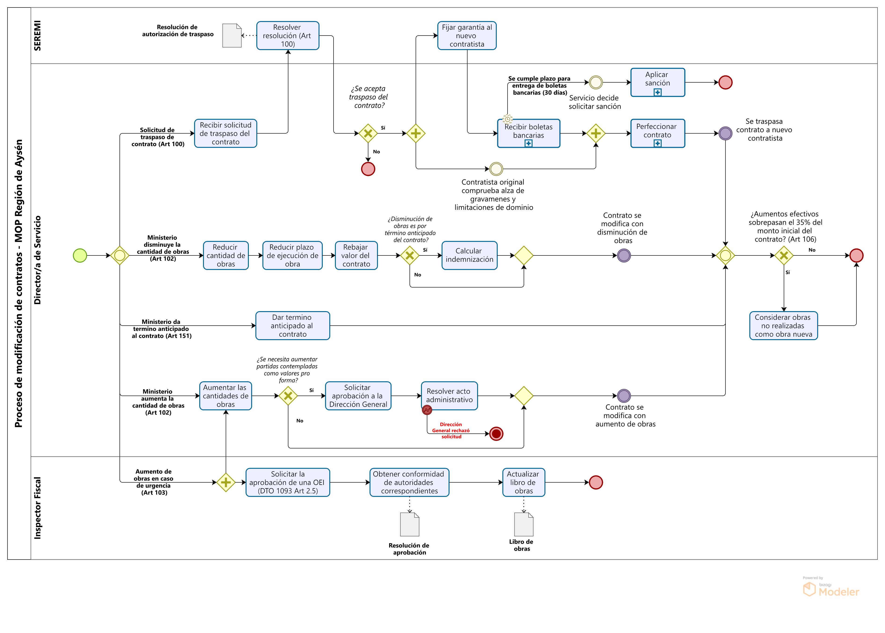

Fase de ejecución de obra pública
Fecha de publicación:

La fase de ejecución de obra pública, toma como entrada la resolución que tramita la adjudicación del contrato por parte del proponente seleccionado durante la fase de adjudicación. Una vez tramitada, se procede con el perfeccionamiento del contrato, donde se formaliza la relación contractual entre el contratista y el Ministerio.
Perfeccionado el contrato, la Dirección debe proseguir con las gestiones para realizar la entrega de terreno y trazado de obras al contratista, donde el Inspector Fiscal actua como representante del Ministerio para realizar la entrega. Concretada la entrega, el contratista queda habilitado para iniciar la ejecución de las obras estipuladas en el programa oficial.
Iniciada la ejecución de las obras, el Inspector Fiscal debe realizar la inspección fiscal para asegurar la carrecta ejecución de las obras. Para cumplir con su labor, tendra bajo su cargo al equipo de trabajo denominado Inspección Fiscal de obra, junto con poder solicitar la contratación de una equipo complemenetario denominado como la Asesoría de Inspección.
Con el transcurso de la inspección fiscal, se van visando los estados de pago para la tramitación de los estados de pago y retenciones. Además, ante posibles eventualidades se pueden proseguir con modificaciones al contrato o con sanciones ante incumplimientos por parte del contratista.
Esta fase del proceso culmina con el término de las obras contempladas en el programa oficial de trabajo.
Perfeccionar contrato
- El contrato empieza a regir desde que la resolución o decreto emitido por la Contraloría General de la República que aprueba el contrato de ejecución de obra pública, ingrese totalmente tramitado a la oficina de partes de la Dirección General o Dirección, según proceda.
- La Oficina de Partes debe consignar la fecha de la tramitación del decreto o resolución en las transcripciones de los documentos
correspondientes.
-
Formarán parte del contrato:
- Reglamento para contratos de obras públicas (Decreto 75 del MOP).
- Bases Administrativas y Técnicas entregados durante la licitación.
- Serie de preguntas y respuestas y cualquier otra documentación aclaratoria emitida por el MOP, previo a la fecha de apertura.
- Todo otro documento que se defina en las bases
- La oferta del contratista adjudicatario, junto con aclaraciones solicitadas durante el análisis de las ofertas.
- El contratista debe suscribir ante notario, tres transcripciones de los documentos del contrato en señal de aceptación. Además, debe protocolizar uno de los ejemplares ante el mismo notario.
- El contratista tiene un plazo de 30 días (desde tramitación de la Oficina de Partes de decreto o resolución), para depositar una de las suscripciones en el archivo especial de
la Dirección correspondiente. La entrega debe realizarla el mismo contratista o un representante legal.
Dentro de esta documentación se debe considerar:
- Bases administrativas
- Bases de prevención de riesgos
- Bases ambientales
- Especificaciones técnicas
- Planos
- Otros antecedentes que sirvieron de fundamento al contrato
- El contratista tiene un plazo de 30 días (desde tramitación de la Oficina de Partes de decreto o resolución) de entregar a la Fiscalía del Ministerio, dos copias del contrato protocolizado. La no entrega dentro del plazo estipulado, dara la facultad a la Dirección de solicitar una sanción que consiste en la suspención del Registro hasta por un periodo de un año.
- Verificada la recepción del contrato protocolizado, la Fiscalía del Ministerio debe remitir uno de los ejemplares a la Dirección correspondiente.
- La Dirección debe archivar la copia del contrato protocolizado recibida. Luego, debe proceder con informar al Registro General de Contratistas sobre las características esenciales del contrato,
destacandose:
- Tipo de contrato
- Contratista adjudicatario
- Fecha de inicio
- Plazo de ejecución
- El contratista tiene un plazo de 30 días de presentar las boletas o pólizas de garantía de seriedad de la oferta u otras que indiquen las bases de la licitación. La no entrega dentro del plazo, da la facultad a la Dirección de solicitar una sanción que consiste en la suspensión del Registro hasta por un periodo de un año.
- En caso de que la obra trate de una Obra Mayor, esta puede ejecutarse por medio de la conformación de un consorcio. Frente a esto, los contratistas que forman el consorcio deben formar una sociedad
dentro de los siguientes 60 días desde la tramitación del decreto/resolución en la Oficina de partes.
No podran formar un consorcio:
- Contratistas relacionados
- Contratistas que hayan recibido una calificación inferior a 5,5 en los últimos dos años
- Se se adjudica la obra a un consorcio, la Dirección debe informar al Registro General de Contratistas sobre:
- Nombre de la obra
- Nombre de los contratistas participantes
- Porcentaje de participación de cada contratista
Recepción de boletas de garantías y/o polizas

- Desde la fecha en que empieza a regir elcontrato, el contratista tiene un plazo de 30 días para hacer entrega de la garantía o póliza de seguro para la seriedad de oferta. Esta debe ser estipulada en Unidades de Fomento. Su vigencia y monto dependera de si la obra corresponde a una Obra Mayor o Menor. Si se opta por una póliza de seguro, esta debe estar inscrita en el Registro de Pólizas de la Superintendencia de Valores y Seguros, como "Poliza de Seguro de Garantía de Obras Públicas", aprobada por el MOP, sin endoso ni clausulo u otra adición que límite las atribuciones conferidas al MOP.
- En caso que se adhieran obras nuevas u extraordinarias, el contratista deberá rendir garantías sobre estas, respetando la vigencia y porcentajes de la tabla anterior.
- Si el contrato se extiende mas allá del plazo de vigencia, el contratista deberá actualizar la vigencia de las garantías entregadas hasta
30 días antes del vencimiento de la garantía vigente, por el período estipulado por la Dirección.
- Si el contratista no renueva las garantías previo a plazo precitado, la Dirección queda facultada para hacerla efectiva, debiendo informar de esta situación al Registro General de Contratistas.
- Si contratista no renueva las garantías, la Dirección puede solicitar su suspensión del Registro hasta por un período de un año.
- Se exigirá al contratista una garantía adicional para el fiel cumplimiento del contrato cuando:
- Presupuesto de la propuesta es inferior en mas de un 15% del presupuesto oficial.
- Presupuesto de variante propuesta es menor al 20% del presupuesto de una parte específica del proyecto (salvo que las bases administrativas indiquen un porcentaje diferente).
- La vigencia de esta garantía adicional correspondera a la vigencia del contrato mas 12 meses.
- Si se realiza traspaso del contrato a u nuevo contratista, este último deberá entregar garantías que cubran los canjes a retenciones que haya realizado el contratista original.
- Si las bses administrativas así lo indican, se podra exigir al contratista un seguro de responsabilidaad civil ante terceros,
- Si vigencia será equivalente al plazo de ejecución de obras mas un año.
- Podra contemplar un deducible no superior al 2% del monto asegurado.
- La Dirección podra ordenar, si así lo dicen las bases, una garantía que resguarde aquellas obras que a su juicio corran mayor riesgo, buscando cubrir permanentemente, por lo menos, el 80% de su valor.
| Tipo de obra | Monto | Vigencia |
|---|---|---|
| Obra Mayor | 3% del valor del contrato | Vigencia del contrato mas 24 meses |
| Obra Menor | 5% del valor del contrato | Vigencia del contrato mas 18 meses |
Entrega de terreno y trazado de obras
- Llegada la fecha de entrega y trazado de obras, el Inspector Fiscal debe formalizar la entrega de terreno y trazado de obras al contratista con la firma del acta que así lo estipula.
- Si el periodo de ejecución de las obras es superior a un año, se establecerán los puntos de referencia para la entrega de aquella sección a ejecutar en el transcurso del año. La entrega de las secciones se hara de acuerdo al calendario de entrega de terreno y del trazado de obras presentado por el MOP en las bases administrativas.
- Si el contratista no asiste a la entrega, la Dirección fijara una nueva fechapara la entrega y trazado de obrasque no exceda los 8 días.
- Si el contratista no asistiere por segunda vez, la Dirección queda facultada para dar termino anticipado al contrato.
- Finalizada la entrega y trazado de la obra (o secciones de esta), el Inspector Fiscal y el contratista firmarán un acta, formalizando así la entrega.
- Si la entrega presenta atrasos que no sean imputables al contratista, se debe proceder con el pago de los gastos directos en que haya incurrido el contratist, previamente verificados por el inspector fiscal, y con la modificación del plazo del contrato.
Inspección Fiscal

- Sobre desvincuación de subcontratista o trabajador (Art 112)
- El Inspector Fiscal podra ordenar desvinculación de alguna empresa subcontratista o trabajador ante problemas relacionados a insubordinación, desorden, incapacidad u algún otro motivo grave comprobado.
- La orden se debe impartir por escrito y dejar constancia de esta en el Libro de Obras.
- El incumplimiento de la orden sera sancionada mediante con una multa diaria de acuerdo a la siguiente tabla.
Tipo de obra Multa diaria en UTM Obra Menor 0,5 a 3 Obra Mayor o Registro Especial 3 a 8 - Sobre el rechazo de materiales
- El contratista tiene la facultad de rechazar los materiales a utilizar en las obras en base a su baja calidad.
- Si existe riesgo de que los materiales rechazados se utilicen durante la ejecución de las obras, el Inspector Fiscal tiene la facultad para ordenar su retiro de la zona de faenas.
Tramitar estados de pago y retenciones
- El estado de pago debe estar firmado por el Inspector Fiscal y por el Director Regional (o nacional). Además, el Director Regional deberá fechar el estado de pago.
- El contratista puede solicitar un anticipo, siempre y cuando las bases administrativas así lo permitan:
- Si el anticipo es a cuenta del precio de la obra, este podra ser de un valor por sobre el 50% del contrato primitivo, descontados los valores proforma, siempre y cuando el contratista caucione una boleta bancaria o poliza de seguro equivalente al monto solicitado, cuya vigencia debe ser equivalente al plazo del contrato mas 6 meses. La solicitud debe ser requerida por el contratista, quien debera suscribir un convenio donde se indique el monto del anticipo, la forma de devolución y reajustabilidad.
- El contratista podra solicitar un anticipo para la contratación de valores pro forma, cuando este se trate de cambios de servicio de utilidad pública. El monto no debe exceder el monto a contratar y debera estar garantizado por una boleta bancaria o poliza de seguro por el monto solicitado por una vigencia equivalente al plazo del contrato mas 6 meses.
- Fechado el estado de pago, el contratista puede emitir factura para efectuar el pago del avance de obras. Si la fecha de la factura emitida es previa al fechado del estado de pago, se sancionará con una multa ascendente al 10% del valor, excluido el IVA.
- No se procedera con el curso del estado de pago si el contratista no ha protocolizado, suscrito ni entregado las boletas o polizas de garantía, sea esto por perfeccionamiento del contrato post adjudicación o modificación del mismo.
- Del estado de pago se deben retener el 10% del valor de la obra pagada, siempre no se haya enterado el 5% del valor del contrato. Las retenciones no aplicaran si el contrato es por administración delegada.
- En caso de atrasos en la entrega de la obra o atrasos parciales de la misma, se aplicaran las siguientes multas:
- Si se trata del atraso en la entrega de obras, se aplicara una multa diaria equivalente a donde "K" es un factor definido en las bases (ante el silencio de las bases, adopta el valor de 0.5), "P" es el monto de las obras contratadas y "d" es el número de días corridos del contrato. Este valor no puede sobrepasar el 15% del valor del contrato.
- Si consiste en un atraso parcial, las bases indicaran el porcentaje de la multa. En caso de que la bases no indique un porcentaje, se aplicara la multa diaria anterior a la parcialidad de la obra atrasada.
- A cada estado de pago, se debe aplicar el sistema de reajuste estipulado en las bases. Si estas nada dicen, se reajustará en la variación del IPC determinado por el INE, para el mes indemiatamente anterior al estado de pago, con el mes que antecede a la fecha de apertura.
- Recibida la solicitud del estado de pago por parte del contratita, el Servicio tiene 30 días para efectuar el pago. En caso contrario, el pago devengará hasta la fecha efectiva del pago, donde se aplicarpa el interés
Resolver sanción
Resolver solicitud de subcontratación
Modificación de contrato
- Sobre el traspaso del contrato
- Se recibe la solicitud para poder hacer traspaso del contrato
- La autoridad competente formaliza el rechazo o aprobación del traspaso mediante una Resolución fundada.
- Si se aprueba el traspaso, la autoridad competente deberá fijar la garantía al nuevo contratista, la cual no debe ser menor a la ya constituida.
- La recepción de las garantías debe realizarse previo a la suscripción del contrato por parte del nuevo contratista. Además, este debe entregar garantías sobre aquellas retenciones quese hubieren efectuado.
- Previo formalización del traspaso, el contratista original debe demostrar el alza de gravámenes y limitaciones de dominio sobre los estados de pago pendientes y futuros.
- Teniendo las boletas de garantías y demostrado el alza de gravámenes y dominio sobre los estados de pago, el nuevo contratista procede con la suscripción del contrato.
- Sobre la disminucón de obras
- El Ministerio puede solicitar la disminución de cantidad de obras tanto en contratos a series de precios unitarios como en contratos a suma alzada.
- Para contratos de suma alzada, la disminución debe comprender partidas o porcentajes de ellas perfectamente determinadas y valorizadas.
- Siempre y cuando la disminución no sea a causa de un término anticipado del contrato, el contratista tiene derecho a una indemnización equivalente al 10% de la disminución que resulte de la liquidación final. Para el calculo de la indeminización, no se debe considerar variaciones de los valores pro forma.
- Sobre el aumento de obras
- El Ministerio puede solicitar aumento de las cantidades de obras en contratos a serie de precios unitarios
- El aumento de las cantidades de obras no puede sobrepasar el 30% de cada partida del presupuesto
- Los precios unitarios a utilizar para el pago de los aumentos de obras seran los convenidos en el contrato.
- La vigencia del contrato se vera aumentada en un valor proporcional al aumento que haya tenido el contrato inicial. Se podrá disponer de un plazo diferente con la autorización de la autoridad pertinente por resolución fundada.
- Para aumento de obras que formen parte de partidas de valores pro forma, se necesitará previa aprobación de la Dirección
General de Obras Públicas. Luego, debe resolver la autoridad que corresponda, de acuerdo a la siguiente tabla.
Contratos iniciales iguales o superiores a 200.000 UTM Autoridad Porcentaje del Contrato Inicial Director General con V°B° del Ministro de OOPP Igual o Superior a 30% e inferior a 50% Director General Inferior a 30% (Con tope de UTM 60.000) Contratos iniciales inferiores a 200.000 UTM Autoridad Porcentaje del Contrato Inicial Director General Igual o Superior a 30% e inferior a 50% (Con tope de 60.000 UTM) Directores Nacionales con V°B° del Director General Igual o Superior a 20% e inferior a 30% Directores Nacionales Inferior a 20% Sobre el tope de 60.000 UTM requerirá V°B° Ministro Contratos Regionales Autoridad Modificación en UTM Jefe de Oficina Regional con V°B° de Director General Igual o Superior a 15.000 e inferior a 30.000 Jefe de Oficina Regional con V°B° de Director Nacional Inferior a 15.000 Jefe de Oficina Regional con V°B° Seremi Inferior a 2.500 - Sobre aumento de obras urgentes (DTO 75 - Art 103)
- En caso de obras urgentes, el Inspector Fiscal podra ordenar la ejecución inmediata de las obras por medio de una Orden de Ejecución inmediata (OEI), sin esperar la resolución o decreto que formalice el aumento de obras en el contrato original. Se podra aplicar una OEI cuando el aumento de obras es indispensable para dar continuidad de los trabajos, pudiendo llegar a provocar la paralización temporal, total o parcial de estos.
- Para llevar a cabo la OEI, el Inspector Fiscal debe solicitar la aprobación previa de la autoridad que corresponda, junto con los vistos buenos de las autoridades que le compete, de acuerdo al reglamento de montos (Decreto 1093 - Modificaciones de Contratos de Obra) (ver tablas anteriores).
- El contratista podrá dar inicio a la ejecución de las obras siempre y cuando la OEI se encuentre aprobada. Además, con el Inspector Fiscal debe actualizar el libro de obras, anotando la fecha de inicio de ellas. De forma paralela, se debe gestionar la formalización del aumento de obras y perfeccionamiento del contrato con las modificaciones.